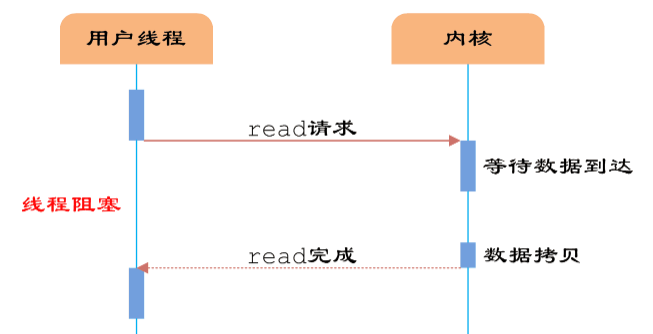
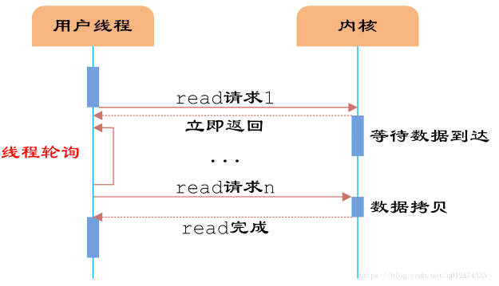
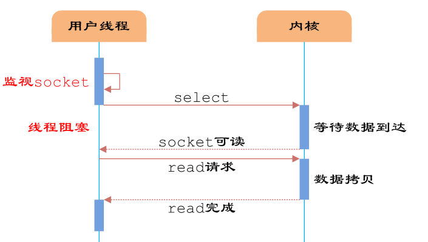
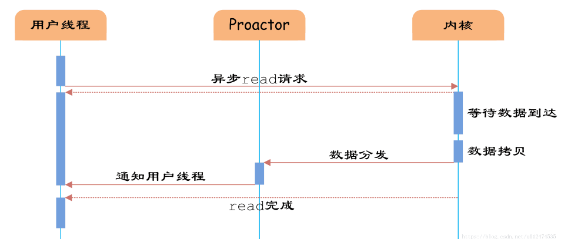
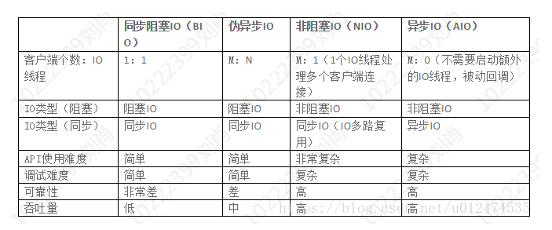
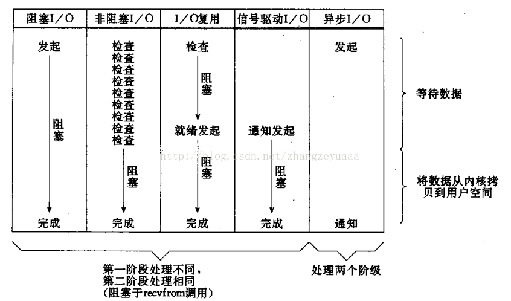

这里需要分清楚是io模型，还是说操作系统操作io的方式。
io操作方式
程序查询方式
程序查询方式是一种程序直接控制方式，这是主机与外设间进行信息交换的最简单方式，输入和输出完全是通过CPU执行程序来完成的。一旦某一外设被选中并启动之后，主机将查询这个外设的某些状态位，看其是否准备就绪？若外设未准备就绪，主机将再次查询；若外设已准备就绪，则执行一次I/O操作。
这种方式控制简单，但外设和主机不能同时工作，各外设之间也不能同时工作，系统效率很低，因此，仅适用于外设的数目不多，对I/O处理的实时要求不那么高，CPU的操作任务比较单一，并不很忙的情况。
程序中断方式
在主机启动外设后，无须等待查询，而是继续执行原来的程序，外设在做好输入输出准备时，向主机发中断请求，主机接到请求后就暂时中止原来执行的程序，转去执行中断服务程序对外部请求进行处理，在中断处理完毕后返回原来的程序继续执行。显然，程序中断不仅适用于外部设备的输入输出操作，也适用于对外界发生的随机事件的处理。
完成一次程序中断还需要许多辅助操作，主要适用于中、低速外设。
DMA方式
DMA方式是在主存和外设之间开辟直接的数据通路，可以进行基本上不需要CPU介入的主存和外设之间的信息传送，这样不仅能保证CPU的高效率，而且能满足高速外设的需要。DMA方式只能进行简单的数据传送操作，在数据块传送的起始和结束时还需CPU及中断系统进行预处理和后处理。
一个设备接口试图通过总线直接向另一个设备发送数据(一般是大批量的数据)，它会先向CPU发送DMA请求信号。外设通过DMA的一种专门接口电路――DMA控制器（DMAC），向CPU提出接管总线控制权的总线请求，CPU收到该信号后，在当前的总线周期结束后，会按DMA信号的优先级和提出DMA请求的先后顺序响应DMA信号。CPU对某个设备接口响应DMA请求时，会让出总线控制权。于是在DMA控制器的管理下，外设和存储器直接进行数据交换，而不需CPU干预。数据传送完毕后，设备接口会向CPU发送DMA结束信号，交还总线控制权。
实现DMA传送的基本操作如下：
（1）外设可通过DMA控制器向CPU发出DMA请求：
（2）CPU响应DMA请求，系统转变为DMA工作方式，并把总线控制权交给DMA控制器；
（3）由DMA控制器发送存储器地址，并决定传送数据块的长度；
（4）执行DMA传送；
（5）DMA操作结束，并把总线控制权交还CPU。
I/O通道控制方式
I/O通道控制方式是DMA方式的进一步发展，在系统中设有通道控制部件，每个通道挂若干外设，主机在执行I/O操作时，只需启动有关通道，通道将执行通道程序，从而完成I/O操作。通道是一个具有特殊功能的处理器，它能独立地执行通道程序，产生相应的控制信号，实现对外设的统一管理和外设与主存之间的数据传送。但它不是一个完全独立的处理器。它要在CPU的I/O指令指挥下才能启动、停止或改变工作状态，是从属于CPU的一个专用处理器。
一个通道执行输入输出过程全部由通道按照通道程序自行处理，不论交换信息多少，只打扰CPU两次（启动和停止时）。因此，主机、外设和通道可以并行同时工作，而且一个通道可以控制多台不同类型的设备。目前，小型、微型机大多采用程序查询方式、程序中断方式和DMA方式；大、中型机多采用通道方式。
通道工作过程：
①在用户程序中使用访管指令进入管理程序，由CPU通过管理程序组织一个通道程序，并启动通道。
②通道执行CPU为它组织的通道程序，完成指定的数据输入输出工作。
③通道程序结束后向CPU发中断请求。CPU响应这个中断请求后，第二次进入操作系统，调用管理程序对中断请求进行处理。
这样，每完成一次输入输出工作，CPU只需要两次调用管理程序，大大减少了对用户程序的打扰。
通道和DMA的不同点：
- DMA只能实现固定的数据传送控制，而通道有自己的指令和程序，具有更强的独立处理数据输入和输出的能力。
- DMA只能控制一台或者少数几台同类设备，而一个通道可以控制多台同类或者不同的设备。
IO模型
相关
内核空间和用户空间：
由于操作系统都包括内核空间和用户空间（或者说内核态和用户态），内核空间主要存放的是内核代码和数据，是供系统进程使用的空间。而用户空间主要存放的是用户代码和数据，是供用户进程使用的空间。目前Linux系统简化了分段机制，使得虚拟地址与线性地址总是保持一致，因此，Linux系统的虚拟地址也是04G。Linux系统将这4G空间分为了两个部分：将最高的1G空间（从虚拟地址0xC0000000到0xFFFFFFFF）供内核使用，即为“内核空间”，而将较低的3G空间（从虚拟地址 0x00000000到0xBFFFFFFF）供用户进程使用，即为“用户空间”。同时由于每个用户进程都可以通过系统调用进入到内核空间，因此Linux的内核空间可以认为是被所有用户进程所共享的，因此对于一个具体用户进程来说，它可以访问的虚拟内存地址就是04G。另外Linux系统分为了四种特权级：0～3，主要是用来保护资源。0级特权最高，而3级则为最低，系统进程主要运行在0级，用户进程主要运行在3级。
同步：发起一个调用，得到结果才返回。
异步：调用发起后，调用直接返回；调用方主动询问被调用方获取结果，或被调用方通过回调函数。
阻塞：阻塞是指调用结果返回之前，当前线程会被挂起。调用线程只有在得到结果之后才会返回。
非阻塞：非阻塞指在不能立刻得到结果之前，该调用不会阻塞当前线程。
同步才有阻塞和非阻塞之分；
阻塞与非阻塞关乎如何对待事情产生的结果（阻塞：不等到想要的结果我就不走了）
同步阻塞IO
同步阻塞IO模型是最简单的IO模型，用户线程在内核进行IO操作时被阻塞。

如图所示，用户线程通过系统调用read发起IO读操作，由用户空间转到内核空间。内核等到数据包到达后，然后将接收的数据拷贝到用户空间，完成read操作。
{
read(socket, buffer);
process(buffer);
}
即用户需要等待read将socket中的数据读取到buffer后，才继续处理接收的数据。整个IO请求的过程中，用户线程是被阻塞的，这导致用户在发起IO请求时，不能做任何事情，对CPU的资源利用率不够。
任何一个系统调用都会产生一个由用户态到内核态切换，再从内核态到用户态切换的过程，而进程上下文切换是通过系统中断程序来实现的，需要保存当前进程的上下文状态，这是一个极其费力的过程。
同步非阻塞IO
同步非阻塞IO是在同步阻塞IO的基础上，将socket设置为NONBLOCK。这样做用户线程可以在发起IO请求后可以立即返回。

如图所示，由于socket是非阻塞的方式，因此用户线程发起IO请求时立即返回。但并未读取到任何数据，用户线程需要不断地发起IO请求，直到数据到达后，才真正读取到数据，继续执行。
用户线程使用同步非阻塞IO模型的伪代码描述为：
{
while(read(socket, buffer) != SUCCESS);
process(buffer);
}
即用户需要不断地调用read，尝试读取socket中的数据，直到读取成功后，才继续处理接收的数据。整个IO请求的过程中，虽然用户线程每次发起IO请求后可以立即返回，但是为了等到数据，仍需要不断地轮询、重复请求，消耗了大量的CPU的资源。一般很少直接使用这种模型，而是在其他IO模型中使用非阻塞IO这一特性。
IO多路复用
我们常用到的IO复用，主要是select和poll。这里同样是会阻塞进程的，但是这里进程是阻塞在select或者poll这两个系统调用上，而不是阻塞在真正的IO操作上。
IO多路复用模型是建立在内核提供的多路分离函数select基础之上的，使用select函数可以避免同步非阻塞IO模型中轮询等待的问题。

如图所示，用户首先将需要进行IO操作的socket添加到select中，然后阻塞等待select系统调用返回。当数据到达时，socket被激活，select函数返回。用户线程正式发起read请求，读取数据并继续执行。
从流程上来看，使用select函数进行IO请求和同步阻塞模型没有太大的区别，甚至还多了添加监视socket，以及调用select函数的额外操作，效率更差。但是，使用select以后最大的优势是用户可以在一个线程内同时处理多个socket的IO请求。用户可以注册多个socket，然后不断地调用select读取被激活的socket，即可达到在同一个线程内同时处理多个IO请求的目的。而在同步阻塞模型中，必须通过多线程的方式才能达到这个目的。
用户线程使用select函数的伪代码描述为：
{
select(socket);
while(1) {
sockets = select();
for(socket in sockets) {
if(can_read(socket)) {
read(socket, buffer);
process(buffer);
}
}
}
}
其中while循环前将socket添加到select监视中，然后在while内一直调用select获取被激活的socket，一旦socket可读，便调用read函数将socket中的数据读取出来。
然而，使用select函数的优点并不仅限于此。虽然上述方式允许单线程内处理多个IO请求，但是每个IO请求的过程还是阻塞的（在select函数上阻塞），平均时间甚至比同步阻塞IO模型还要长。如果用户线程只注册自己感兴趣的socket或者IO请求，然后去做自己的事情，等到数据到来时再进行处理，则可以提高CPU的利用率。
异步IO
“真正”的异步IO需要操作系统更强的支持。在IO多路复用模型中，事件循环将文件句柄的状态事件通知给用户线程，由用户线程自行读取数据、处理数据。而在异步IO模型中，当用户线程收到通知时，数据已经被内核读取完毕，并放在了用户线程指定的缓冲区内，内核在IO完成后通知用户线程直接使用即可。

如图所示，异步IO模型中，用户线程直接使用内核提供的异步IO API发起read请求，且发起后立即返回，继续执行用户线程代码。不过此时用户线程已经将调用的AsynchronousOperation和CompletionHandler注册到内核，然后操作系统开启独立的内核线程去处理IO操作。当read请求的数据到达时，由内核负责读取socket中的数据，并写入用户指定的缓冲区中。最后内核将read的数据和用户线程注册的CompletionHandler分发给内部Proactor，Proactor将IO完成的信息通知给用户线程（一般通过调用用户线程注册的完成事件处理函数），完成异步IO。
用户线程使用异步IO模型的伪代码描述为：
void UserCompletionHandler::handle_event(buffer) {
process(buffer);
}
{
aio_read(socket, new UserCompletionHandler);
}
用户需要重写CompletionHandler的handle_event函数进行处理数据的工作，参数buffer表示Proactor已经准备好的数据，用户线程直接调用内核提供的异步IO API，并将重写的CompletionHandler注册即可。
相比于IO多路复用模型，异步IO并不十分常用，不少高性能并发服务程序使用IO多路复用模型+多线程任务处理的架构基本可以满足需求。况且目前操作系统对异步IO的支持并非特别完善，更多的是采用IO多路复用模型模拟异步IO的方式（IO事件触发时不直接通知用户线程，而是将数据读写完毕后放到用户指定的缓冲区中）。
总结


1）同步IO操作会引起进程阻塞直到IO操作完成。
2）异步IO操作不引起进程阻塞。